Adidas
Advestisement
by Jerry & Kevin
Examples of product

 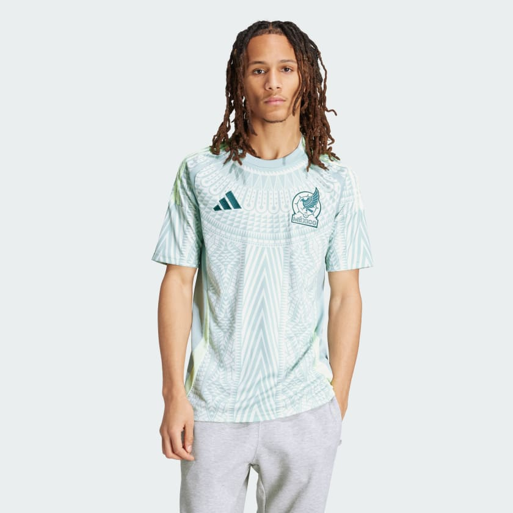
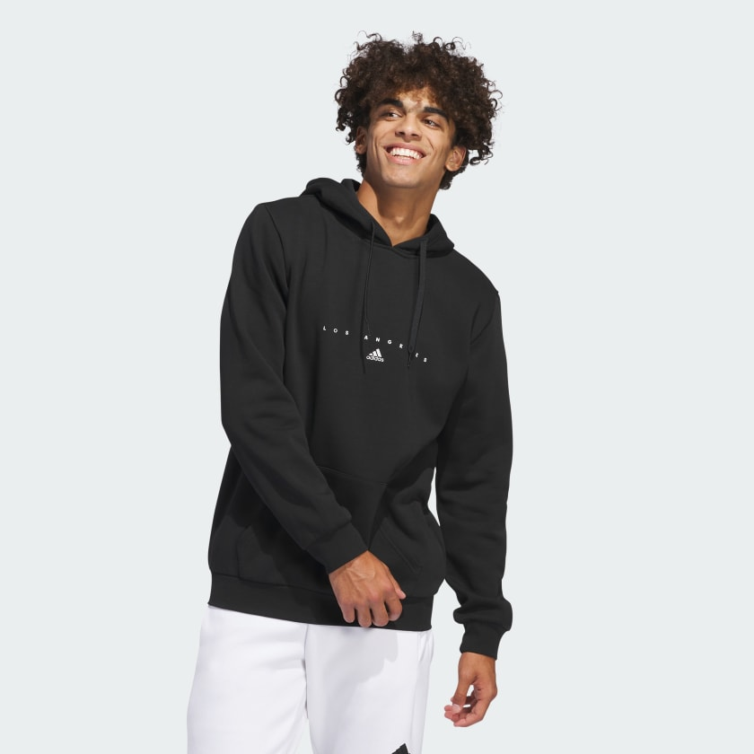
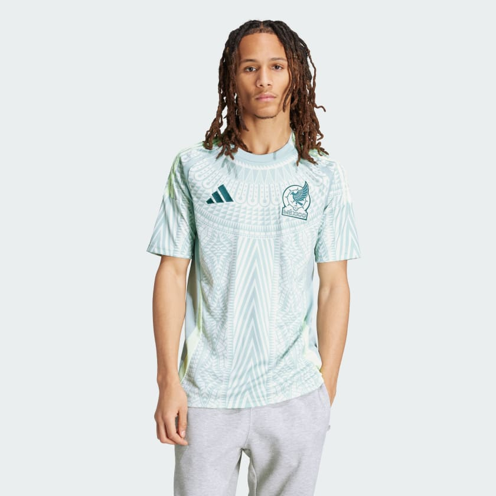
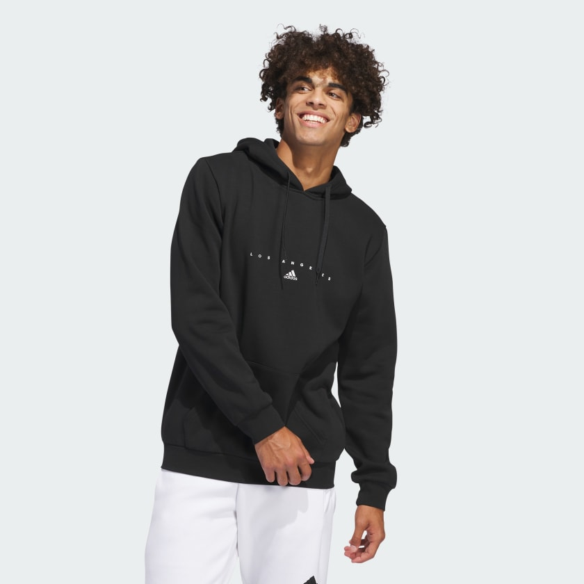

 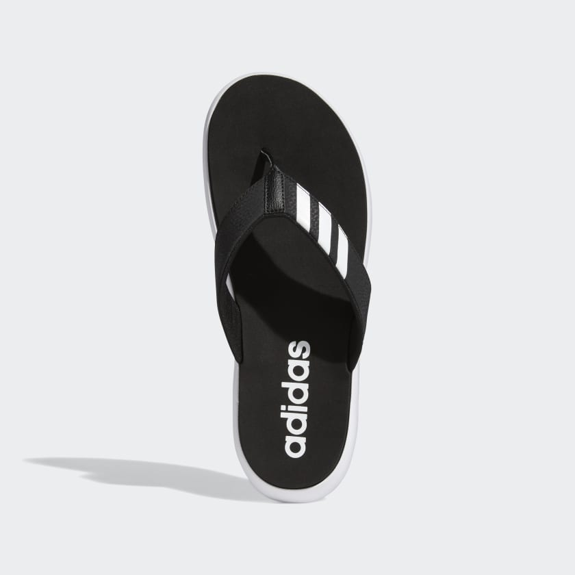
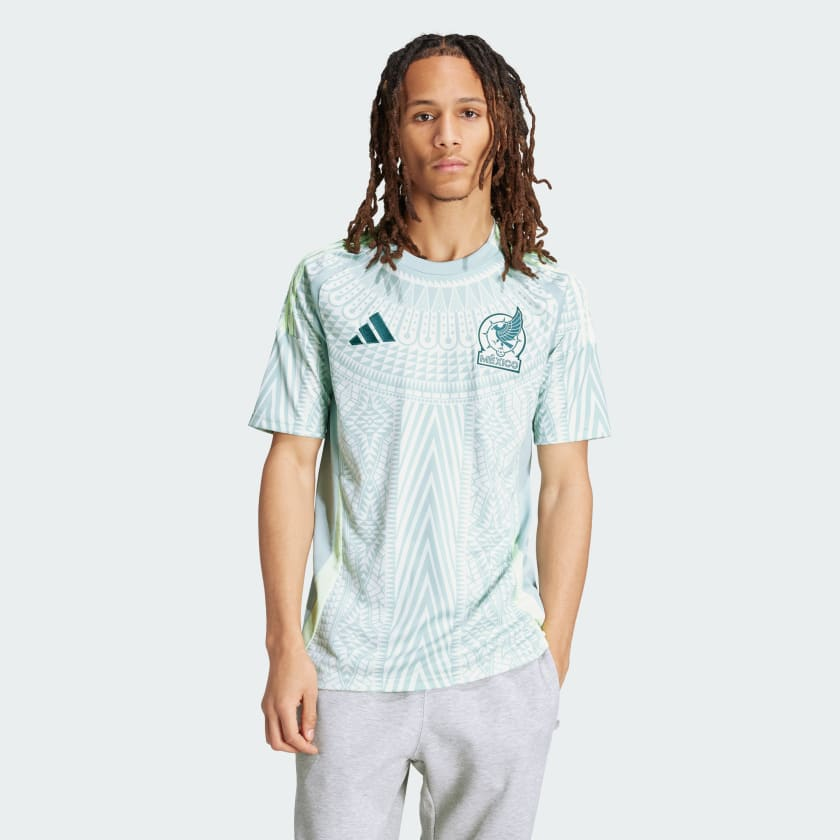
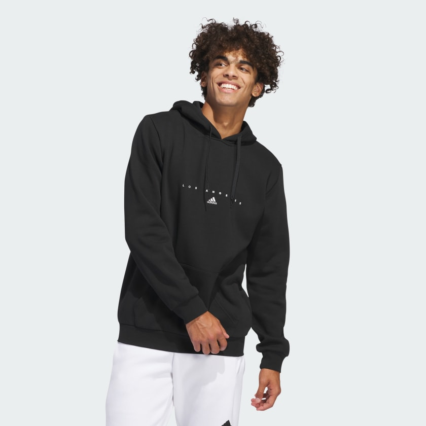
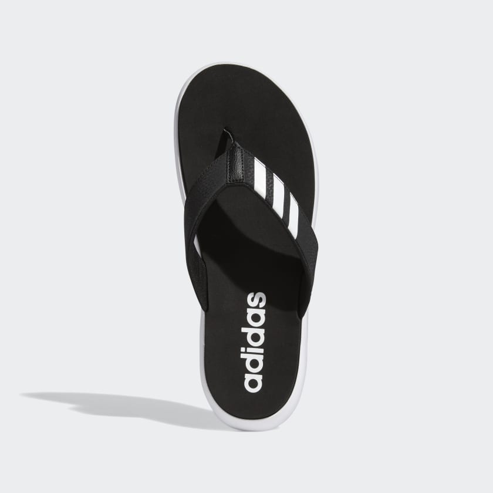
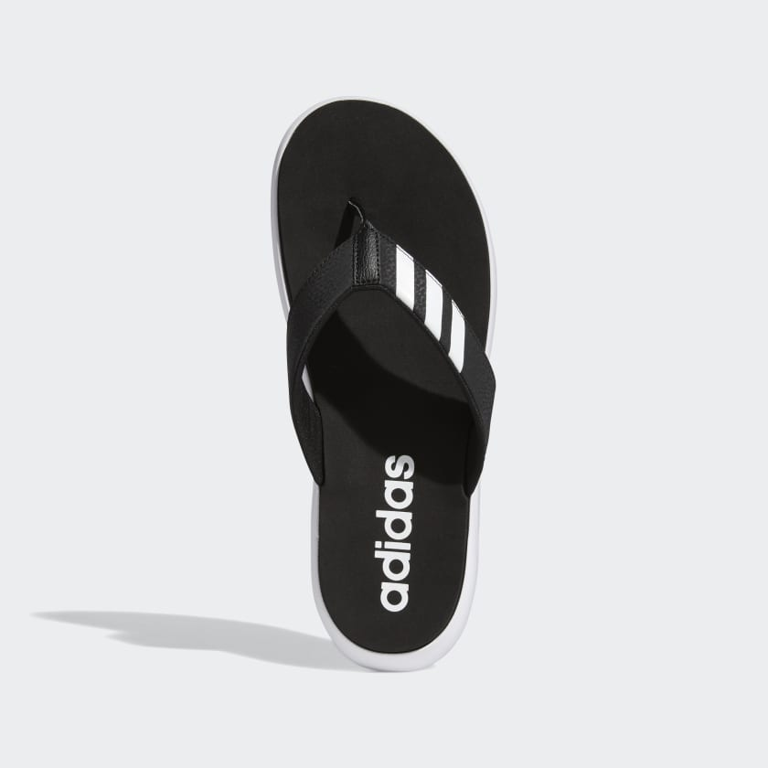
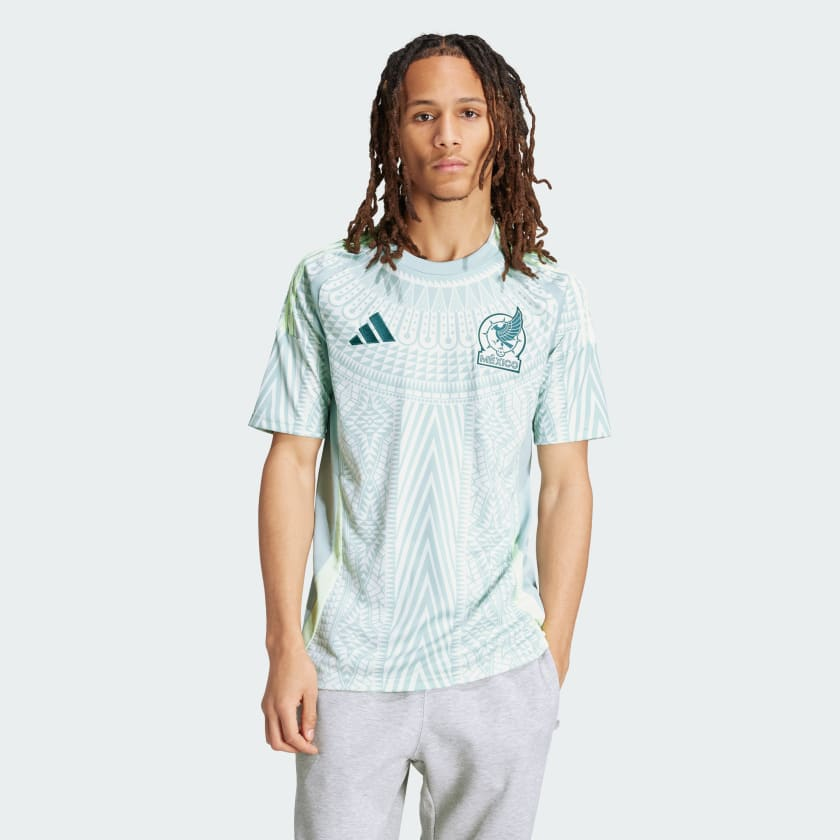
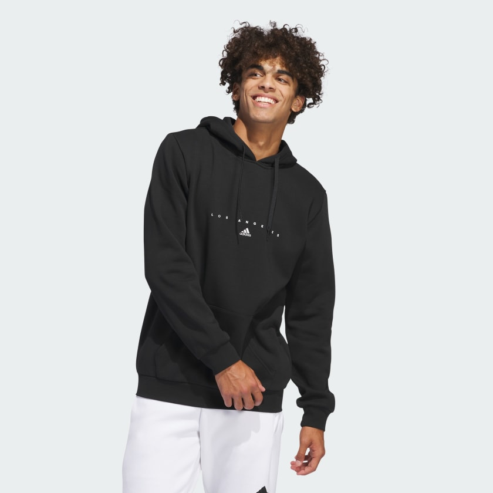
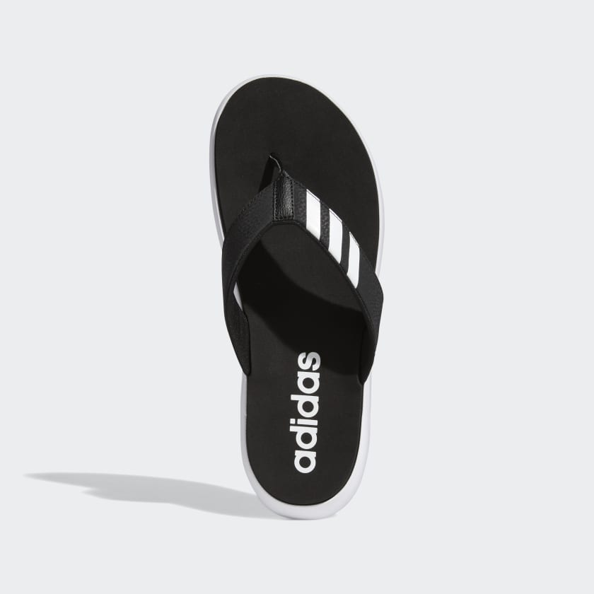
The brand wasn’t originally known as Adidas, which is a portmanteau of the founder’s named Adi Dassler, but was started under the name Gebrüder Dassler Schuhfabrik in 1924.
Adidas AG, headquartered in Herzogenaurach, Bavaria, Germany, stands as a giant in the athletic apparel and footwear industry. Renowned for its iconic three stripes, Adidas boasts the title of the largest sportswear manufacturer in Europe and the second largest globally, trailing only behind Nike. From its humble beginnings in the founder's mother's house, where Adolf Dassler crafted spiked running shoes for athletes, to its current status as a multi-billion euro revenue-generating powerhouse, Adidas has left an indelible mark on the world of sports and fashion. Despite a tumultuous history marked by a familial rift that birthed a rival brand, Adidas remains synonymous with innovation, quality, and unmistakable style.
The legacy of Adidas is not just about its products but also about its cultural impact. The brand has transcended its original purpose of providing athletic gear and become a symbol of youth culture, street fashion, and even high-end luxury. Collaborations with designers, celebrities, and artists have further solidified its position as a trendsetter.
In recent years, Adidas has also made significant strides in sustainability and social responsibility. Recognizing the environmental impact of its industry, the company has implemented initiatives to reduce waste, use eco-friendly materials, and promote fair labor practices throughout its supply chain.
Adidas's commitment to innovation remains unwavering. Whether it's developing cutting-edge performance technologies for athletes or pushing the boundaries of design in fashion, the brand continues to push forward. With a global presence and a diverse range of products catering to athletes and fashion enthusiasts alike, Adidas shows no signs of slowing down. Its influence extends far beyond the realm of sports, shaping the way we dress, move, and express ourselves.
With sport assuming an increasingly prominent role in the lives of many, both within and beyond competitive arenas, the industry Adidas navigate is notably enticing. Embracing the authentic essence of the adidas brand and a steadfast commitment to understanding the needs of their consumers, the company aim is to capitalize on the momentum of enduring structural trends. This entails pushing the envelope in product innovation, experiential offerings, and service enhancements.
Since the creation and launch of our ‘Own the Game’ strategy, the economic and political environment Adidas operate in has significantly changed. Macroeconomic challenges as well as geopolitical tensions have had an adverse impact on their business, our consumers, and business partners. Paving the way for a restart, Bjørn Gulden joined adidas as new CEO in January 2023. In this context, their are currently conducting a thorough strategic review, which also includes the financial ambition for 2025.
Adidas nearly avoided bankruptcy in the 90’s after the brand had made admittedly poor strategic decisions.
Adidas offers a wide range of products, including footwear, clothing, and accessories, catering to various sports and lifestyles. The price range for Adidas products can vary significantly depending on factors such as the type of product, its materials, technology, design, and any collaborations or special editions.
For example, basic Adidas t-shirts or socks might start at around $15 to $20, while more specialized performance wear like running shoes or soccer cleats can range anywhere from $60 to $200 or more. Limited edition or designer collaborations could command even higher prices, sometimes reaching hundreds or even thousands of dollars.
It's important to note that prices can also vary depending on the region, with factors such as local taxes and import duties influencing the final cost. Additionally, discounts and sales events can affect the price range, offering opportunities to purchase Adidas products at lower prices.
Adidas nearly avoided bankruptcy in the 90’s after the brand had made admittedly poor strategic decisions.
Adidas offered legendary BMX riders Ryan Nyquist and Dave Mirra their own signature sneakers to increase its popularity amongst BMX riders.

The company was founded by Adolf "Adi" Dassler who made sports shoes in his mother's scullery or laundry room in Herzogenaurach, Germany after his return from World War I. In July 1924, his older brother Rudolf joined the business, which became "Dassler Brothers Shoe Factory" (Gebrüder Dassler Schuhfabrik). The electricity supply in Herzogenaurach was unreliable, so the brothers sometimes had to use pedal power from a stationary bicycle to run their equipment.
Dassler assisted in the development of spiked running shoes (spikes) for multiple athletic events. To enhance the quality of spiked athletic footwear, he transitioned from a previous model of heavy metal spikes to utilising canvas and rubber. In 1936, Dassler persuaded U.S. sprinter Jesse Owens to use his hand made spikes at the 1936 Summer Olympics. Following Owens' four gold medals, the name and reputation of Dassler shoes became known to the world's sportsmen and their trainers. Business was successful and the Dasslers were selling 200,000 pairs of shoes every year before World War II.
Both Dassler brothers joined the Nazi Party (NSDAP) in May 1933 and became members of the National Socialist Motor Corps. Adolf took the rank of Sportwart in the Hitler Youth from 1935 until the end of the war. During the war, the company was running the last sport shoe factory in Germany and predominantly supplied the Wehrmacht with shoes. In 1943, their shoe production was forced to cease operations and the company's facilities and workforce was used to manufacture anti-tank weapons. From 1942 to 1945, at least nine forced labourers were working at both sites of the company.
The Dassler factory, used for production of anti-tank weapons during World War II, was nearly destroyed in 1945 by US forces. It was spared when Adolf Dassler's wife convinced the American soldiers that the company and its employees were only interested in manufacturing sports shoes. American occupying forces subsequently became major buyers of the Dassler brothers' shoes.
The brothers split up in 1947 after relations between them had broken down,] with Adolf forming a company registered as Adidas AG, from Adi Dassler, on 18 August 1949, and Rudolf forming a new firm that he called Ruda – from Rudolf Dassler, later rebranded Puma. Urban myths have popularised two backronyms for the name "Adidas": All Day I Dream About Sports.
Adidas offered legendary BMX riders Ryan Nyquist and Dave Mirra their own signature sneakers to increase its popularity amongst BMX riders.